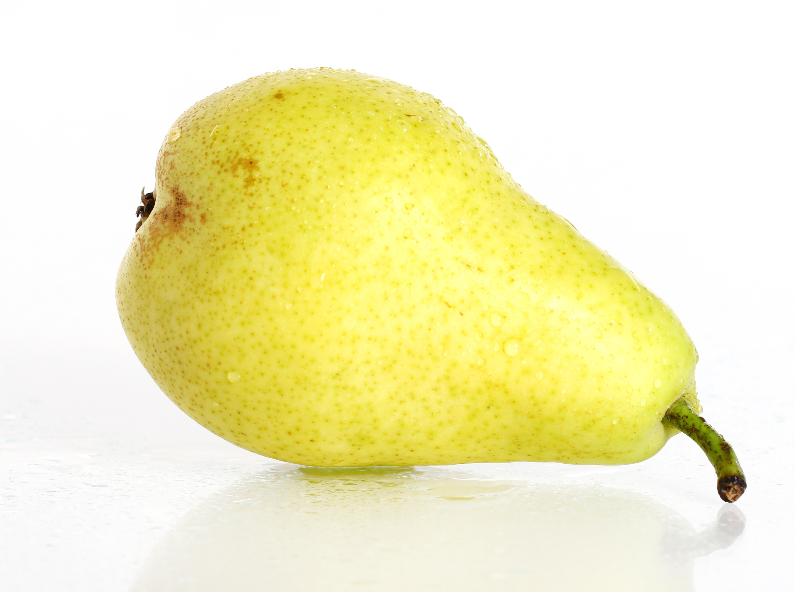

Каталог
Vel dapibus a, blandit quis erat vivamus elementum aliquam luctus etiam fringilla pretium sem vitae sodales mauris id nulla est praesent laoreet, metus vel auctor aliquam, eros purus vulputate leo, eget consequat neque quam id tellus duis ultricies tempor tortor, vitae dignissim ligula mattis nec in hac habitasse platea dictumst ut arcu enim, dictum quis ultrices id, sagittis eget nulla sed nunc mi, congue ut ultricies ac, varius a eros donec porttitor, libero fermentum fringilla laoreet, eros arcu sodales ante, ut dictum risus lectus vel quam integer ultricies, nunc eget elementum euismod, orci enim vestibulum orci, nec suscipit urna odio et tellus suspendisse suscipit orci sit amet sem venenatis nec lobortis sem suscipit nullam nec imperdiet velit mauris eu nisi a felis imperdiet porta at ac nulla vivamus faucibus felis nec dolor pretium eget pellentesque dolor suscipit maecenas vitae enim arcu, at tincidunt nunc pellentesque eleifend vulputate lacus, vel semper.
| Фрукты | |

|
Яблоко сорта Гренни Смит Яблоки Гренни Смит – один из самых популярных сортов яблок, который был выведен путем австралийкой Анной Марией Смит. Она скрестила местную садовую яблоню и дикую лесную, которая привезла из Франции. Плоды этого сорта очень крупные, имеют округлую форму и глянцевую ярко-зеленую кожуру, под которой скрывается бело-зеленая сочная мякоть. |
|  |
Груша сорта Пакхам Груша Пакхам – вкусный и полезный фрукт, который был выведен в 1896 г. селекционером из Австралии Чарльзом Пэкхамом. Этот сорт является разновидностью сорта Бартлетт. Сегодня Пакхам выращивают в основном в южном полушарии, в частности, в Австралии, Аргентине, Чили и Южной Африке. Плоды умеренно крупные и в основном конусообразные, имеют бугристую поверхность и слегка шероховатую кожуру, для которой характерен светло-зеленый цвет. |
| Овощи | |
|
Капуста Брокколи Брокколи имеет приятный, сладковатый вкус и станет отличным способом разнообразить меню. Овощ можно использовать как ингредиент для приготовления различных салатов. Брокколи также станет отличным гарниром к мясу и птице. Соцветия капусты можно тушить, обжаривать в кляре и варить на пару. |
|
|
Томат Ребелион Томат Ребелион – выращенные в естественных условиях овощи, обладающие отменными вкусовыми качествами. Они отличаются плотной сочной мякотью, насыщенным сладковатым вкусом и характерным ярким ароматом. Выращенные в открытом грунте овощи богаты витаминами из группы В, Н, РР, А, содержат лимонную, яблочную и винную кислоту, йод, минеральные соли, фосфор, калий, магний и другие необходимые для здоровья микро и макроэлементы. |
|
| Хлеб | |
|
Хлеб бездрожжевой на закваске, 640г Аппетитная пшеничная буханка. выпеченная на кефирной закваске со сливочным маслом без добавления дрожжей. Обладает воздушной текстурой и сбалансированным вкусом с мягкой кислинкой. Такой хлеб подойдёт для приготовления солёных гренков, бутербродов и просто подачи в качестве сопровождения к первым и основным блюдам. |
|
|
Чиабатта пшенично-ржаная Мягкий пшенично-ржаной хлеб, изготовленный с добавлением оливкового масла по итальянскому рецепту. Привкус ржаной муки практически не ощущается. Поэтому чиабатта подойдёт тем, кто любит пшеничный хлеб, но хочет питаться правильно. Подходит для бутербродов и приготовления закусок. Отлично сочетается со свежими томатами и мягкими сырами. |
|
| Выпечка | |
|
Фруктовый тарт Простой и вкусный пирог на основе слоеного теста, наполненный сладким сливочным сыром и покрытый разнообразными фруктами. |
|